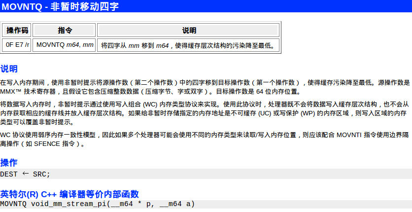
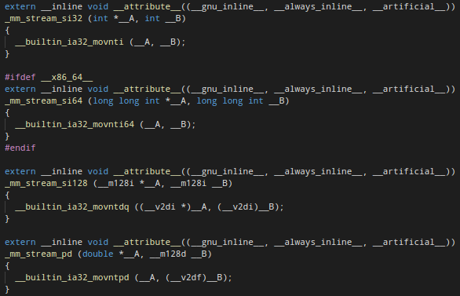
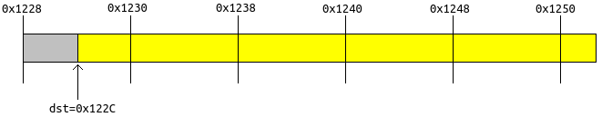
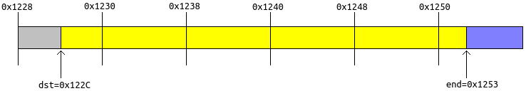

一般情况下，对于内存的写操作，都是先写在cache里面的，当cache需要被替换时，才被真正回写到内存里面。这样的设计可以加速内存的访问速度，因为，根据“程序局部性原理”，当前被访问过的内存数据，在接下来很可能又会被访问。
但是，如果应用程序确信，当前写入内存的数据，在接下来很长时间内都不会再被访问，那么cache的存在反而降低了性能。这种情况下，当应用程序写数据时，首先内存中的数据要被加载到cache，于是会导致旧的cache被替换。当cache替换后，新的数据写入cache中。可是这些cache并不会在接下来被使用到，于是徒增了cache替换和cache加载的步骤。因此，这种情况下，应用程序就需要能够绕过cache，直接写内存。在IA64架构上，这是可行的。我就以64位整数赋值操作和memcpy()操作为例，展示如何绕过cache直接写内存。
最最核心、最最底层的支持是IA64 CPU提供的movntq指令：

当然，如果直接使用_mm_stream_pi的话，还有牵扯到MMX寄存器的操作（我在*mmintrin.h里面没有找到_m64对应的load函数）。我在查看emmintrin.h时，看到了_mm_stream_函数簇的实现：

里面那个
void _mm_stream_si64 (long long int *__A, long long int __B)
{
__builtin_ia32_movnti64 (__A, __B);
}
引起了我的注意，直接给一个64位指针A，然后传一个64位整数B，丢给__builtin_ia32_movnti64()，就可以直接对指定的地址赋值，绕过cache。
于是，nt_set_64()函数的实现就直接有了：
void nt_set_64(void* ptr, long long val)
{
assert(((size_t)ptr & 7) == 0);
__builtin_ia32_movnti64(ptr, val);
}
对于nt_memcpy(void* dst, const void* src, size_t len)，最直观的想法就是，使用__builtin_ia32_movnti64()每次8字节地拷贝。但是，有一些细节需要考虑——dst、src和len可能不是8字节对齐的。
对于dst，如果不是8字节对齐的，比如下图：

图中dst=0x122C。首先把dst对齐到8字节（向前），得到地址0x1228。从0x1228到0x122C之间有4个字节，那么创建一个uint64_t head，该head前4字节就复制x1228到0x122B的4个字节，也就是图中灰色的一段。而head后4字节就复制src的前4字节。然后，使用
__builtin_ia32_movnti64(0x1228, (long long int)head)
把head的8个字节绕过cache直接写到0x1228的位置。这样，灰色一段的内容保持不变，而dst到0x1230之间的内容变成了src开头4字节。
再之后，只需要依次：
__builtin_ia32_movnti64(0x1230, *((long long int*)(src + 4))); __builtin_ia32_movnti64(0x1238, *((long long int*)(src + 12))); __builtin_ia32_movnti64(0x1240, *((long long int*)(src + 20))); __builtin_ia32_movnti64(0x1248, *((long long int*)(src + 28)));
每次都可以以8字节对齐的地址写到dst指向的buffer中，且绕过cache。

而最后的结尾部分，也如最初的head一样如法炮制：创建一个uint64_t tail，tail前3字节来自src+36，而tail后5字节来自0x1253到0x1258。然后：
__builtin_ia32_movnti64(0x1250, (long long int)tail);
这样，蓝色的部分的内容保持不变，而dst最后的3字节改为src最后三字节，而且绕过cache。
这里有个小问题需要思考：图中灰色部分和蓝色部分的地址一定有效吗？答案是一定有效！因为OS分配内存是按页的，也就是4K为单位。所以，如果0x122C有效，那么他之前的4096字节对齐地址一定有有效。蓝色部分也是一样。
差点忘记给出nt_memcpy()的实现了：
void nt_memcpy(void* dst, const void* src, size_t len)
{
if(!len)
return;
void* align = (void*)((size_t)dst & ~(size_t)7);
assert(align <= dst);
if(align < dst)
{
long long head = *((long long*)align);
size_t front_sz = dst - align;
assert(front_sz < 8);
size_t back_sz = 8 - front_sz;
if(len <= back_sz)
{
for(size_t i = 0; i < len; i++)
((char*)&head)[front_sz + i] = ((char*)src)[i];
__builtin_ia32_movnti64(align, head);
return;
}
else
{
for(size_t i = 0; i < back_sz; i++)
((char*)&head)[front_sz + i] = ((char*)src)[i];
__builtin_ia32_movnti64(align, head);
dst += back_sz;
src += back_sz;
len -= back_sz;
}
}
assert(len);
assert(((size_t)dst & 7) == 0);
while(len >= 8)
{
__builtin_ia32_movnti64(dst, *((long long*)src));
dst += 8;
src += 8;
len -= 8;
}
if(len)
{
long long tail = *((long long*)dst);
for(size_t i = 0; i < len; i++)
((char*)&tail)[i] = ((char*)src)[i];
__builtin_ia32_movnti64(dst, tail);
}
}
可以写一个测试程序：
int main()
{
size_t data_len = 65536;
char* data = malloc(data_len);
for(size_t i = 0; i < data_len; i++)
data[i] = (char)(rand() % 256);
char* buffer1 = malloc(data_len);
char* buffer2 = malloc(data_len);
while(1)
{
size_t start = rand() % data_len;
size_t len = (rand() % (data_len - start)) + 1;
memcpy(buffer1, data + start, len);
nt_memcpy(buffer2, data + start, len);
int ret = memcmp(buffer1, buffer2, len);
assert(ret == 0);
}
return 0;
}